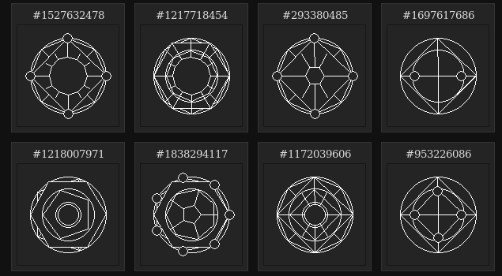

La programmation est-elle un art ?
Bienvenue sur Laitues ! Alors pour ce premier article, nous (Johyn et Quentin) avons décidé de nous inspirer d’une discussion que nous avons eue sur Discord à propos de quelque chose d’important : l’art. Et plus précisément à la question de l’intérêt artistique de notre propre domaine d’étude et celui qui nous passionne (et vous passionne aussi on l’espère), c’est bien sûr la programmation.
Notre discussion a commencé par un commentaire de Quentin disant que non, les memes ne sont en rien de l’art. Et de là c’est Johyn qui est venu demander si la programmation en était.

Il faut savoir, si l’on n’est pas codeur, que ceux-ci emploient souvent des termes comme « du beau code », ou « un algorithme élégant », tout à fait de la même manière que les mathématiciens ou les physiciens parlent de leurs formules d’ailleurs.
Premièrement nous nous disons que la programmation répond à un besoin fonctionnel, tout comme le fait l’architecture des bâtiments, et que dans les deux domaines, chaque créateur a son propre style, même s’il est parfois difficile à discerner sans avoir l’œil du connaisseur.
Nous avons considéré le fait qu’il faut être initié pour saisir ce que l’on entend par là. « C’est typique de ce que l’on dit pour la musique ou la peinture », argue Johyn.
En parlant de l’« œil du connaisseur », voilà un autre problème : seuls les codeurs lisent le code des autres, donc le code lui-même en tant qu’art est un marché de niche. En outre, on agréera qu’il est assez ardu de convoyer des émotions telles que la joie, la colère, l’envie, la tristesse :
Johyn dit : « On ne peut pas vraiment transmettre un message par un code source. »
C’est à ce moment que Quentin apporte un exemple : un générateur de cercles d’alchimie aléatoires, codé en C# et en PHP (voir Sources ci-dessous). On s’accorde sur le fait que ce programme est artistique, mais où réside l’art ?

Qu’est-ce donc qui est artistique ?
- le résultat ?
- le code lui-même ?
- l’algorithme ?
- le fait que ce soit un programme ?
- le fait même de programmer ?
On se dit que ce n’est pas le résultat :
Johyn dit : « en soit les cercles sont pas si fous que ça, je peux en faire un avec une règle »
Quentin suggère : « dans l’interface et l’interaction utilisateur, parce que l’art existe uniquement dans l’œil du spectateur ? »
Mais vient pour finir une orientation sur l’art abstrait : on sait que c’est artistique parce que c’est un programme, et le résultat n’est que le support de l’œuvre ! C’est là une idée qui nous étonne bien, et qui apporte une comparaison : avec l'art traditionnel comme la peinture ou la littérature on voit tout de suite que c'est artistique sans avoir besoin de se demander les intentions ou la méthode employée ; dans l’art abstrait que peut être la programmation, la question de l’intention de l’artiste est centrale.
Johyn : « Et c’est pour ça qu’un programme lambda n’est pas de l’art du coup ? »
Quentin : « Hum oui ça doit être ça… »
English version: Is programming an art?
Welcome to Laitues (Lettuce) ! So for this first article, we (Johyn and Quentin) were inspired by a discussion we had on Discord about something important: art. And more precisely, the question of the artistic interest of our own field of study and the one we are passionate about (and we hope you are too), which is of course programming.
Our discussion began with a comment from Quentin saying that no, meme are no art at all. And that's when Johyn asked if programming was.
If you are not a programmer, you should know that we often use terms like "beautiful code" or "an elegant algorithm" in exactly the same way that mathematicians or physicists talk about their formulas.
First we say to ourselves that programming meets a functional need, just as the architecture of buildings does, and that in both fields, each creator has his own style, even if it is sometimes difficult to discern without having the eye of the expert.
We have considered the fact that one must be initiated to grasp what is meant by this. "It's typical of what people say about music or painting," Johyn says.
Speaking of the "expert's eye", here is another problem: only coders read each other's code, so the code itself as an art is a niche market. Moreover, one will agree that it is rather difficult to convey emotions such as joy, anger, envy, or sadness with programming:
Johyn says, "You can't really transmit a message through source code."
It is at this moment that Quentin brings an example: a random alchemy circle generator, coded in C# and PHP (see Sources below). We agree that this program is artistic, but where does art reside?
What is artistic?
- the result?
- the code itself?
- the algorithm?
- the fact that it's a program?
- the very fact of programming?
We tell ourselves that this is not the result:
Johyn says: "The circles aren't that crazy actually, I can make one with a ruler"
Quentin suggests: "in the user interface and interaction, because art only exists in the viewer's eye?"
But finally comes an orientation on abstract art: we know that it is artistic because it is a program, and the result is only the support of the work! This is an idea which astonishes us, and which brings a comparison: with traditional art such as painting or literature, we immediately see that it is artistic without having to ask ourselves the intentions or the method employed; in abstract art such as programming, the question of the artist's intention is central.
Johyn: "And that's why a regular program isn't art, right?"
Quentin : "Um yes that must be it..."